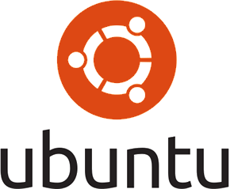

Home
|
|
What is this website?Welcome! This website is here to tell you about the benefits of Linux & Open Source, and why one might choose it over other (proprietary) operating systems. A particular focus is PC Gaming, which in recent years has significantly improved on Linux, thanks to efforts by Valve, such as SteamOS , Proton, and a personal endorsement on their download page. The Free and Open-Source Software (FOSS) movement is far from new, dating back to the 1980s. The philosophy is that you should always have the ability to know what your computer is doing, and have the freedom to modify it if you wish (not necessarily to re-sell, but for your own use). Public Code, a grass-roots movement in Europe explains it well in this video that explains how making code open source can be great for communities. |
How is Linux different from Windows or OSX?Linux is different in that it's completely open source and free (free like free speech, not like free beer). From a user's standpoint, there isn't much of a difference, as Linux developers have been tirelessly working to make it as usable as Windows or OSX. What's great about Linux is its reliability, security, it's long-term standing as the standard for web servers. Don't believe my because of my bias? Hear it from Microsoft. Largely, the reason more consumers aren't using Linux seems to be either lack of knowledge, or fear of Linux's old reputation. While Linux does require a few more steps to get running than Windows, most distributions have made this much easier in recent years, such as Ubuntu, which has an 11 minute step-by-step install guide. |
 |
|
|
What about gaming?Linux has for a long time had a reputation of beign terrible for games. As recently as a year ago, this was basically true. Graphics cards were incompatible (as Linus Torvalds can attest to), developers didn't make games natively for Linux, and the ports that fans made were rarely very good. Plus, using these ports could result in a ban for specific games. Linux has come a long way since then, however. Just this year, Valve unveiled Proton, an open source program that actively allows most Windows games to be run on Linux. It is similar to an emulator, although technically slightly different, converting Windows-specific systems-level commands on the fly. Aditionally, programs such as Lutris have significantly improved their community-sourced ports, and generally run pretty well. While gaming on Linux is still relatively new, it is rapidly gaining traction and becomming a viable option. |